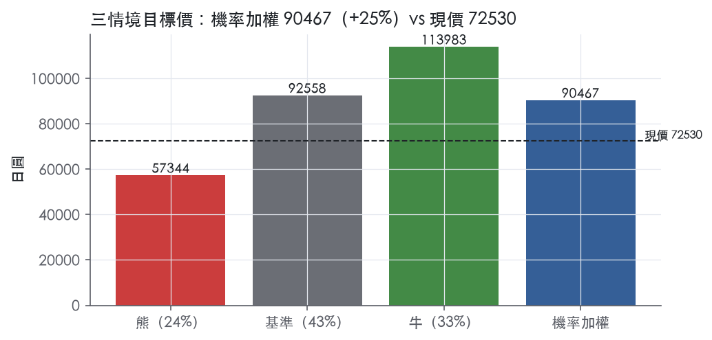
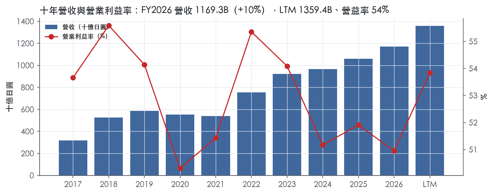
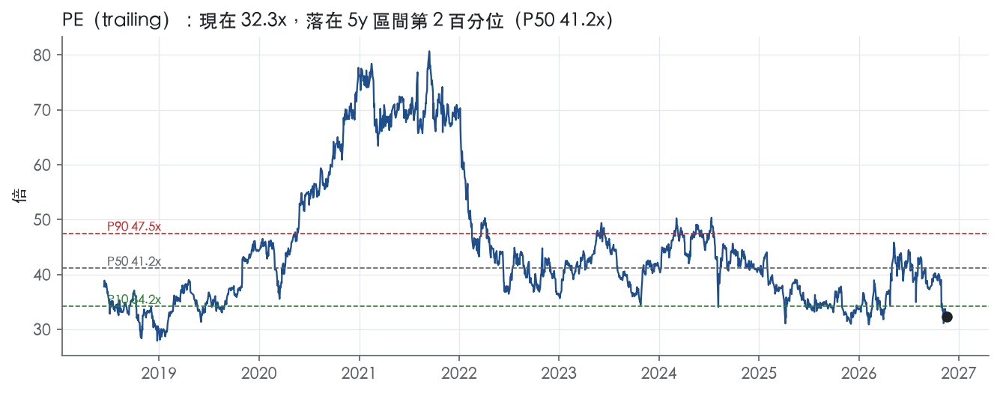
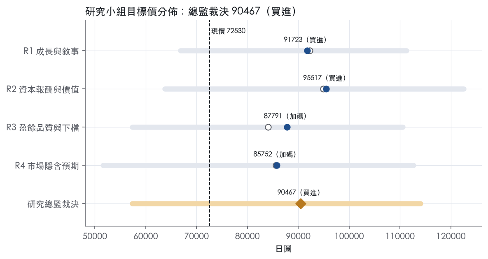
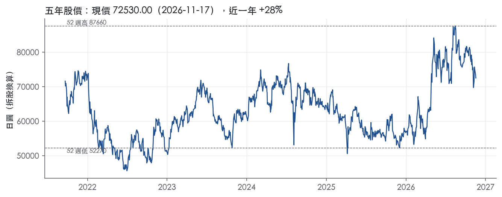

評等總表 › 未分類 › 6861.T
盈餘非峰值、倍數在地板，看多｜評等 買進｜目標價 90467
| 報告日 | 評等 | 目標價 | 當時股價 | 超額報酬 |
|---|---|---|---|---|
| 2026-11-17 | 買進 | 90,467 | 72,530 | +17.7% |
| 評等 | 買進（邊界，鄰近加碼） |
| 12 個月目標價 | 90467 日圓 |
| 現價 | 72530.00 日圓（2026-11-17） |
| 預期報酬 | 股價 +24.7%＋股息 0.8%＝總報酬 +25.6%；日股門檻 7.8%，超額 +17.7% |
| 估值方法 | P/E 32.4x，套在第 5–8 季的EPS（也就是一年後的未來四季） |
| 三情境 | 熊 57344／基準 92558／牛 113983 |
| 研究流程 | 四位研究員兩輪辯論＋研究總監裁決 |
| 資料來源 | EDINET、TDnet、J-Quants、Yahoo、FRED（全免費） |
盈餘非峰值、倍數在地板，看多（研究總監裁決，四位研究員兩輪辯論後）
評等 買進（邊界，鄰近加碼）｜12 個月目標價 90467 日圓（總監三情境機率加權 91177 與研究員中位數 89757 各半）｜現價 72530.00（2026-11-17）
預期報酬：股價 +24.7%＋股息 0.8%＝總報酬 +25.6%。日股門檻 7.8%，超額 +17.7%，離加碼的分界不到三個百分點，屬邊界評等（落在其他級距的機率約二成）。
估值方法：P/E 32.4x，套在第 5–8 季的EPS（也就是一年後的未來四季）。三情境：熊 57344（24%）／基準 92558（43%）／牛 113983（33%）。
什麼會讓研究總監改變看法：FY2027Q3 營收低於 380B 或單季營益率跌破 54%，y1 降到 18% 並轉中性；FY2028Q1 年增轉負或棚卸資産續升且季營收下滑，熊機率上調到 30% 以上；公司宣布庫藏股或還元率升到 50% 以上，倍數上調到前瞻帶 P25 36.8x。
| 過去四季（實際，FY2027Q2） | 未來四季 | 第 5–8 季 | 第 9–12 季 | |
|---|---|---|---|---|
| 營收（B） | 1,359.4B | 1,658.5B | 1,758.0B | 1,845.9B |
| 營收成長 | 24.8% | 22.0% | 6.0% | 5.0% |
| 營業利益率 | 53.8% | 55.0% | 53.0% | 52.5% |
| EPS（日圓） | 2242.67 | 2799.38 | 2856.72 | 2966.17 |
| EPS 成長 | 33.0% | 24.8% | 2.0% | 3.8% |
| 每股股息（日圓） | — | 0.00 | 0.00 | 0.00 |
| P/E（現價） | 32.3x | 25.9x | 25.4x | 24.5x |
| 股息殖利率（現價） | 0.8% | — | — | — |
過去四季為申報數字；預測為研究總監的假設、程式計算。倍數與殖利率都用現價計算，用來看現價對應各期獲利的高低。
| 情境 | 機率（歷史） | 故事 | 未來四季營收成長 | 第 5–8 季營益率 | 倍數 | 目標價 | 股價漲跌 |
|---|---|---|---|---|---|---|---|
| 熊 | 24%（15%） | 對應風險表第 1 條（全球製造業資本支出循環轉弱）與第 4 條（倍數再壓）：FY2028 對 +32.8%/+36.8% 基期轉負、直銷販管費不縮編使營益率跌破 FY2020 的 50.3%，EPS 與倍數雙殺 | 7.0% | 49.0% | 28.0x | 57344 | -20.9% |
| 基準 | 43%（45%） | FY2027 季路徑撐住 22% 成長，Q5–Q8 降到 6%、營益率 53%，倍數停在十年地板，報酬全來自盈餘實現 | 22.0% | 53.0% | 32.4x | 92558 | 27.6% |
| 牛 | 33%（40%） | 本行上行路徑（美國 GDP 2.8、日圓 145 逆風已扣）下設備投資再延一年，成長降檔與峰值分母兩個壓倍數理由消失，倍數回到前瞻帶 P10–P25；R1 的 37x@ntm 換到 q5_q8 口徑調為 34x | 28.0% | 55.5% | 34.0x | 113983 | 57.2% |
目標價由程式依研究總監的驅動與倍數計算；機率由研究總監給定。括號內是歷史頻率：把這檔股票過去十年 12 個月報酬的波動形狀，置中在基準情境，結果落在各情境附近的比例。

四位研究員用不同方法各自估值，回應研究總監的質疑後交出第二輪，最後由總監逐點裁決。各研究員的主張見第七章，裁決理由見第八章，完整論證見《研究底稿》。
| 立場（一輪→二輪） | 加權目標價（一輪→二輪） | 評等（一輪→二輪） | 第二輪倍數 | 熊～牛目標價 | |
|---|---|---|---|---|---|
| R1 成長與敘事 | 看多→看多 | 92218→91723 | 買進→買進 | 32.0x | 66784～111270 |
| R2 資本報酬與價值 | 看多→看多 | 94910→95517 | 買進→買進 | 34.0x | 63700～122538 |
| R3 盈餘品質與下檔 | 中性→看多 | 84099→87791 | 加碼→加碼 | 32.4x | 57344～110565 |
| R4 市場隱含預期 | 看多→看多 | 85607→85752 | 加碼→加碼 | 26.0x | 51621～112669 |
| 研究總監裁決 | 看多 | 90467 | 買進 | 32.4x | 57344～113983 |
目標價由程式依各自的驅動與倍數計算；評等＝機率加權總報酬 − 日股門檻。
Keyence 是一家以感測器、測量器、影像系統機器、雷射標記機為核心的電子應用機器製造與銷售公司。公司的關係企業由本公司、連結子公司39社、關連公司1社（2026年3月20日現在）構成，主要事業內容為電子應用機器的製造及販賣。本公司負責商品的開發、製造及販賣，Keyence Software負責本公司商品的軟體開發，Keyence Engineering負責本公司商品的製造。客戶對象是全球廣泛業種、業界的製造現場，涵蓋工廠自動化（FA）用的感測器、測量器、影像系統機器、雷射標記機，以及研發用顯微鏡、物流與零售用條碼讀取器。本公司的事業是以全球且廣泛業種、業界為對象展開，業績變動的因素包括生產設備、研究開發投資，以及各國經濟動向等的影響。簡單說，Keyence 賣的是提升製造現場品質與效率的高附加價值零組件，買方是全球工廠的資本支出與研發支出，不是消費者。
Keyence 不做傳統分部揭露，整體以電子應用機器的製造・販賣為中心展開事業活動，為單一分部，因此省略分部記載。單一產品・服務區分對外部顧客的銷售額佔連結損益表銷售額90%超，因此省略記載。產品線涵蓋FA用感測器、測量器、影像系統機器、雷射標記機，以及研發用顯微鏡、物流與零售用條碼讀取器，公司依市場變化持續進行企劃開發。本年度研究開發的主要成果包括可讓任何人簡單進行高品質造形的製造現場用3D印表機，以及有助於減少設備啟動・調整工時並穩定運轉的線型汽缸感測器與智慧閥，研發費為32,839百萬円（約32.84B）。設備投資方面，本年度以次期物流中心及新商品用模具等工具器具及備品為主，總額28,371百萬円（約28.37B）。各產品線在整體營收的具體占比，10-K（有報）未揭露。從財務結構看，FY2026毛利率83.0%、營益率51.0%（is系年度表，FY2026），顯示產品定價力與單一高毛利分部結構一致。
Keyence 的銷售以直銷體制為核心，海外事業是公司明示的成長重點。FY2026（自2025年3月21日至2026年3月20日）地區銷售額：國內390,066百萬円、海外合計779,222百萬円（其中美國225,751百萬円、中國186,550百萬円、其他366,920百萬円），合計1,169,289百萬円。對比前一年度（FY2025），國內372,753百萬円、海外合計686,391百萬円（美國197,579百萬円、中國157,891百萬円、其他330,920百萬円），合計1,059,145百萬円，顯示海外、尤其美國與中國成長速度快於整體。有形固定資產分布：FY2026國內65,716百萬円、海外29,002百萬円，合計94,718百萬円。外部顧客銷售額中，沒有單一客戶佔連結損益表銷售額10%以上，顯示客戶高度分散、無集中度風險。通路上，本公司透過北美・中南美的KEYENCE CORPORATION OF AMERICA等4家公司、歐洲的KEYENCE DEUTSCHLAND GmbH等5家公司、亞洲的KEYENCE (CHINA) CO., LTD.等12家子公司進行銷售。其中美國子公司與中國子公司的銷售額佔連結銷售額比重超過10%，為特別揭露對象，美國子公司FY2026銷售額224,772百萬円、經常利益24,584百萬円；中國子公司銷售額184,882百萬円、經常利益15,433百萬円。這種「直銷＋全球子公司鋪點」的通路模式，是公司維持高毛利與高定價權的關鍵基礎。
最近幾季 Keyence 處於營收與利潤率同步加速擴張的階段。FY2026Q3（期末2025-12-20）營收289.31B、年增11.4%、營益率49.8%（is系8季表，FY2026Q3）。FY2026Q4（期末2026-03-20）營收334.68B、年增17.9%、營益率53.6%（同表，FY2026Q4），全年度（FY2026）營收1,169.29B、年增10.4%、營益率51.0%（is系年度表，FY2026）。進入FY2027，成長進一步加速：FY2027Q1（期末2026-06-20）營收346.62B、年增32.8%、營益率54.0%（同表，FY2027Q1）。最新一期為半年報表述的「中間連結會計期間」（FY2027上半年，自2026年3月21日至2026年9月20日）：銷售額735,399百萬円（較去年同期增34.9%）、營業利益408,262百萬円（增50.0%）、經常利益424,348百萬円（增48.9%）、歸屬母公司股東的中間純利益298,675百萬円（增49.4%）。對應單季，FY2027Q2（期末2026-09-20）營收388.78B、年增36.8%、營益率56.9%（is系8季表，FY2027Q2），淨利159.54B、EPS 657.84（同表）。定性說明指出，當期全球經濟以製造業為中心設備投資持續，各地區表現堅穩：北中南美多數業界維持堅穩，亞洲以半導體・電気精密業界為中心持續成長，歐洲持續回溫，國內設備投資以回復基調推移。資產負債表上，現金及存款從596,976百萬円增至698,507百萬円，投資有價證券增加177,537百萬円是總資產增加的主因，純資產因利益剩餘金增加231,981百萬円而增加233,486百萬円。本份半期報告沒有揭露全年業績計畫數字。整體看，這是近十年罕見的加速期，FY2027上半年營益率已站上54.0%以上、單季Q2達56.9%，遠高於FY2026全年51.0%的水準，顯示本輪全球製造業資本支出回溫對Keyence的槓桿效果明顯。
公司明確表示「企劃開發力的強化」與「海外事業的擴大」是兩大不可或缺的優先課題。在企劃開發面，公司表示基於「附加價值的源泉是商品」的認知，將活用自身強項的全球直銷體制，進一步強化開發・營業部門聯動的商品企劃開發力，推進能更精準捕捉全球市場變化與潛在需求的商品開發體制，目標是持續創造「世界初」「業界初」的商品。公司並表示，為實現持續成長，除既有事業的擴大外，創造新的附加價值是課題之一，將包括M&A在內追求一切可能性。在海外事業面，公司認為海外市場規模相對於自身商品的滲透度仍小，存在巨大成長餘地，將透過現地組織體制與人才培育強化銷售力、構建強固的全球聯動體制，推進與國內同樣的直銷體制，以實現海外市場的進一步成長。公司並指出，其客觀經營指標特別重視「銷售額」、「銷售總利益」、「營業利益」，但由於事業對象是全球廣泛業種・業界，受生產設備、研發投資及各國經濟動向等因素影響，認為合理估算業績預測與目標有困難，惟仍致力追求這些經營指標的最大化。從判斷角度看，公司這套「不給財測、靠直銷體制與高比例研發黏住客戶」的敘事與目前32.3x trailing P/E（5年分位僅2.0%，接近近五年低點）形成有趣對照，顯示市場在最近一年的加速成長後，對評價倍數已明顯降溫而非追高（px/band 相關fact）。FY2027上半年56%上下的單季營益率若能持續，相對FY2026全年51.0%是結構性利潤率上修，值得後續緊盯是否為景氣循環高點而非新常態。政策保有股（交叉持股）規模相對市值極小（特定投資股票帳面合計僅5,532百萬円＋非上市48檔814百萬円），資本效率議題對本公司評等影響有限，核心仍在於能否延續這輪全球製造業資本支出上升週期。

Keyence 評為寬護城河、趨勢穩定，我們有把握未來 10 年以上 ROIC 仍高於資本成本。主要依據有三點：
ROIC 從高點一路下滑，是本評級最大的反證；我們判斷主因是現金累積稀釋報酬，不是競爭侵蝕，因此不下修評級。
Keyence 的優勢可歸入「轉換成本」與「成本優勢」兩類。無形資產（專利、品牌、授權）在材料中找不到具體證據，網路效應與效率規模同樣缺乏證據，因此不列。
轉換成本：Keyence 的產品裝進客戶的生產線，客戶在設備啟動與調校上投入了工時，換用其他供應商就要重來一次，這構成轉換成本。
成本優勢：
數字大致支持寬護城河，唯一的衝突是 ROIC 呈下滑趨勢。
支持的證據：
衝突的證據：
資本成本代理值的口徑：
1. 海外直銷能否複製
2. 中國本土競爭
3. M&A 稀釋報酬
4. 創辦人與企業文化
目標倍數相對同業應給予溢價：利潤率穩定度與景氣低谷時仍高於資本成本的 ROIC，足以支撐 10 年以上的超額報酬期間。現行 P/E 32.3x 位於自身 5 年分位 2.0%，低於 5 年 P10 的 34.2x，護城河本身沒有惡化，不支持把倍數壓到自身歷史區間以下。估值時應先確認 ROIC 下滑是否為現金稀釋所致，以排除營運報酬的影響；若扣除現金後報酬率依然下滑，溢價幅度才需要縮小。
| 指標 | 最新 | 十年平均 | 標準差 | 最低 | 最高 |
|---|---|---|---|---|---|
| ROIC | 14.7% | 16.2% | 2.7% | 11.7% | 21.6% |
| 毛利率 | 83.0% | 82.3% | 0.8% | 80.9% | 83.8% |
| 營業利益率 | 51.0% | 52.9% | 1.8% | 50.3% | 55.6% |
| FCF 利潤率 | 34.4% | 35.4% | 2.7% | 28.5% | 38.8% |
| ROE | 13.5% | 14.0% | 1.7% | 10.7% | 16.4% |
程式計算。資本成本代理值（10 年債＋5%）：10.2%；ROIC 平均減資本成本：6.1%；ROIC 有資料的 9 年中，高於資本成本 9 年。
程式計分表八項指標中沒有任何一項被標成紅燈，只有現金轉換、應計比率、股數稀釋、股東回饋四項是黃燈，且每一項都能在財報原文裡找到合理解釋，沒有一條是「說不清楚」的紅旗。但考慮到 CFO／淨利與 FCF／淨利連續十年都沒有穩定站上 1.00x 綠燈門檻，加上股東回饋比例偏低、留存利益快速累積，盈餘品質定為「中」而非「高」。
現金轉換率呈現溫和落後但非惡化趨勢：CFO／淨利 LTM 0.93x、近三年平均 1.01x、十年平均 0.97x，均為黃燈；FCF／淨利 LTM 0.88x、近三年 0.97x、十年 0.93x，同為黃燈。對照有報原文，FY2026 營業活動現金流入 430,680 百萬円（430.68B），低於親會社株主歸屬當期純利益 445,185 百萬円（445.19B），差距主要來自營收高速成長帶動的營運資金占用——半年報顯示應收票據及應收帳款由 379,590 百萬円增至 438,274 百萬円、存貨由 85,273 百萬円增至 117,287 百萬円（兩者皆為 H1 FY2027 對 FY2026 年底的變動），這是應收應付隨營收成長同步擴張的典型現象，不是收入虛增。FCF 落後 CFO 的部分則來自資本支出比率從 FY2025 的 1.4% 跳升到 FY2026 的 2.4%（資料包年度表），對應有報所述新商品開發（3D 列印機、感測器新品）投資增加，屬於擴產性支出而非維護性支出膨脹。應計比率 LTM 0.9%、近三年 -0.2%、十年 0.5%，皆遠低於 5% 紅燈門檻，顯示淨利對應計項目的依賴度很低，盈餘本質上仍以現金為基礎。
決算短信與有報裡完全沒有出現任何非 GAAP 調整項目，無論是 SBC 加回、攤銷加回或重組費用剔除，全文找不到一條。資料包的 SBC／營收一項也顯示「—」，代表這家公司股權激勵規模小到沒有被拆項揭露，這與美股常見的「GAAP 淨利被 SBC 大幅灌水」情況完全不同，表示報表上的淨利就是真實淨利，沒有可調整空間。唯一值得注意的是經常利益高於營業利益的部分：FY2026 營業利益 595,759 百萬円、經常利益 635,756 百萬円，差額主要來自受取利息增加；H1 FY2027 受取利息達 13,967 百萬円，較去年同期 7,080 百萬円大幅成長。這是公司龐大現金與有價證券（H1 現金及預金 698,507 百萬円、有價證券 803,618 百萬円、投資有價證券 1,691,841 百萬円）在高利率環境下產生的真實利息收入，屬於經常性非營業收益，不是一次性認列，估值時可視為本業外但可持續的加項。
資產負債表極度穩健，淨負債為 -520.75B，淨負債／EBITDA -0.69x，為計分表唯一的綠燈，公司最近八季總債務均為 0.00B（資料包季表），實質上是零負債、淨現金公司。FY2026 總資產 3,670,655 百萬円（3,670.66B）較前期增加 381,431 百萬円，主因有價證券增加 256,729 百萬円；負債僅 199,183 百萬円（199.18B）；純資產合計 3,471,472 百萬円（3,471.47B），增加主因利益剰余金增加 336,049 百萬円。H1 FY2027 進一步擴大，總資產 3,955,137 百萬円（3,955.14B）、負債 250,179 百萬円（250.18B）、純資產 3,704,958 百萬円（3,704.96B），利益剰余金再增加 231,981 百萬円。資本配置面，FY2026 配當金支付 109,136 百萬円（109.14B），自己股份帳面在 H1 僅由 3,854 百萬円變動到 3,870 百萬円，幾乎沒有庫藏股買回動作。對應計分表，（股利＋回購）／淨利 LTM 24.5%、近三年 21.3%、十年平均 15.1%，皆為黃燈，未達 50% 綠燈門檻，反映公司長期把大部分盈餘留在帳上轉為有價證券投資，而非回饋股東。在東證要求改善資本效率、處分政策保有股的大環境下，這個偏低的股東回饋比例未來有調整壓力，但目前還不構成盈餘品質問題，只是資本配置效率議題。
計分表八項裡沒有任何一條紅燈，程式也沒有標出額外紅旗，以下逐一說明黃燈與空白項目：
報表上的 GAAP 淨利基本可信，因為決算短信與有報完全沒有非 GAAP 調整項目、SBC 影響不顯著，估值研究員可以直接用 GAAP 數字，不需要額外打折。現金轉換率的黃燈主要是成長期營運資金占用與資本支出擴張所致，建議對近一兩年的 FCF 估值稍微保守，但不必對淨利本身設定品質折價。公司淨現金、零負債，槓桿完全不構成倍數上限的限制，目前 P/E 32.3x 低於十年中位數 41.6x 的差距，應理解為市場對成長放緩或倍數重估的反應，而不是盈餘品質惡化的訊號。
| 項目 | LTM | 近三年 | 十年 | 燈號 | 規則 |
|---|---|---|---|---|---|
| 營業現金流／淨利 | 0.93x | 1.01x | 0.97x | 黃 | ≥1.00x 綠、<0.80x 紅 |
| 自由現金流／淨利 | 0.88x | 0.97x | 0.93x | 黃 | ≥0.90x 綠、<0.60x 紅 |
| 應計比率（(淨利−CFO)／平均總資產） | 0.9% | -0.2% | 0.5% | 黃 | ≤0.0% 綠、>5.0% 紅 |
| SBC／營收 | — | — | — | — | ≤3.0% 綠、>8.0% 紅 |
| 淨負債／EBITDA | -0.69x | -0.78x | -0.93x | 綠 | ≤1.50x 綠、>3.00x 紅 |
| 利息保障倍數（營業利益／利息） | — | — | — | — | ≥8.00x 綠、<3.00x 紅 |
| 稀釋股數年變動 | 0.0% | -0.0% | -0.0% | 黃 | ≤0.0% 綠、>3.0% 紅 |
| （股利＋回購）／淨利 | 24.5% | 21.3% | 15.1% | 黃 | ≥50.0% 綠、<0.0% 紅 |
程式計算；燈號以 LTM（無則近三年平均）判定。
| 風險 | 觸發指標（看什麼數字、在哪裡看） | 對 EPS 的影響方向與粗略幅度 | 未來 12 個月發生機率（高／中／低） | 出處 |
|---|---|---|---|---|
| 全球製造業資本支出循環轉弱 | 決算短信每季營收年增率（FY2027Q1已達32.8%、Q2達36.8%，is系8季表）；若轉負或大幅趨緩即為訊號 | 方向：負，幅度：大（FY2026全年營益率51.0%，FY2027上半年已衝高至54.0%以上，單季Q2 56.9%，回落空間大）【判＋量化底稿】 | 高 | 研究判斷 |
| 經濟動向（內需＋海外景氣急變） | 國內與海外（美國、中國、歐洲、亞洲）地區銷售額季度變化（有報セグメント情報） | 方向：負，幅度：中（FY2026海外銷售779,222百萬円，佔比持續上升，對海外景氣曝險加大） | 中 | |
| 為替變動（日圓升值） | usdjpy 即期匯率（159.93，2026-11-13）相對公司海外營收占比變化 | 方向：負，幅度：中（海外銷售佔連結銷售額約三分之二，日圓升值會侵蝕換算後營收與利潤）【判＋量化底稿】 | 中 | |
| 評價倍數重估風險（非基本面） | trailing P/E 分位（現在32.3x，5年P10 34.2x、P50 41.2x，現在分位僅2.0%）；股價相對52週高點87660的回落幅度 | 方向：負，幅度：大（EPS不變但倍數回歸5年中值會造成顯著股價重估風險，非盈餘本身）【判＋量化底稿】 | 中 | 研究判斷 |
| M&A執行風險 | 公司公告的併購案件、商譽變動（有報経営方針章） | 方向：負，幅度：小至中（公司明言將「包括M&A在內追求一切可能性」，但目前帳上無大型併購，屬前瞻性風險） | 低 |
1. 景氣循環轉弱是最大風險，因為當前成長速度明顯是加速而非穩態。FY2026全年營收成長10.4%、營益率51.0%（is系年度表），但FY2027Q1、Q2分別加速到年增32.8%、36.8%，營益率衝到54.0%與56.9%（is系8季表）。半年報定性說明指出，世界經濟以製造業為中心設備投資持續，北中南美堅穩、亞洲半導體電気精密業界持續成長、歐洲持續回溫、國內設備投資回復基調，這是全球同步的設備投資上升週期，而非公司自身結構性改善。公司本身在風險章明確承認「國內及海外經濟に急激な変化が起きた場合には、業績及び財務状況に影響を及ぼす可能性があります」。監測方法是緊盯每季決算短信的営業利益率與年增率，一旦連續兩季營收年增率滑落到個位數或營益率跌破FY2026全年的51.0%，就是轉弱訊號。
2. 經濟動向風險是公司自己列在風險章第一條。公司表示其事業「日本國內及北米・中南米、歐洲、アジアにもわたって事業展開」，受國內外經濟動向等變動的影響。FY2026地區銷售中，海外合計779,222百萬円已超過國內的390,066百萬円，美國225,751百萬円、中國186,550百萬円（有報セグメント情報），顯示海外景氣的權重持續上升。監測指標是每季有報・短信揭露的地區銷售額變化，尤其美國、中國兩大海外市場的年增率。
3. 為替變動風險公司列為第二條，直接影響換算後營收與成本。公司指出外貨建商品・服務的成本及價格受匯率影響，現地通貨建資產負債、收益費用在連結財務諸表作成時須以日圓換算，為替相場的變動會影響財務狀況及業績。目前日圓兌日圓159.93（2026-11-13）處於相對日圓偏弱的水準，若轉向日圓升值，將侵蝕以日圓計的海外營收與利潤。監測指標是即期日圓兌日圓匯率走勢，以及每期半年報・決算短信中「為替差益／差損」項目（半年報當期為為替差損1,992百萬円，去年同期為為替差益1,644百萬円）。
4. 評價倍數重估風險不在公司風險章內，是我們自行判斷的市場層面風險。目前trailing P/E 32.3x，位於近五年僅2.0%的分位（5年P10為34.2x，P50為41.2x），意味市場已經把倍數壓到歷史低區間，但同時股價過去一年仍上漲28.3%（px相關fact）【判＋量化底稿】。這代表市場一方面認可盈餘加速，另一方面已對高倍數保持警戒；若景氣轉弱觸發EPS下修，倍數可能進一步向下修正，造成EPS與倍數同向惡化的雙重打擊。監測指標是trailing P/E相對5年P10/P50的分位變化，以及股價相對52週高點87660的距離。
5. M&A執行風險機率低但方向明確，公司已公開表態要追求併購機會。公司在経営方針章表示「創造新的附加價値」是課題之一，將「包括M&A在內追求一切可能性」，風險章亦指出M&A實施後「買收後の事業環境の変化や想定していた効果が十分に発現しない場合」會影響業績及財務狀況。目前資產負債表上無重大商誉或大型併購紀錄，此風險屬前瞻性、尚未發生，監測指標是未來公告的併購案規模與商譽變化。
1. 單季利潤率已顯著脫離過去十年常態區間，回歸風險未被公司自己量化。FY2027Q2單季營益率56.9%、Q1為54.0%，遠高於FY2017至FY2026十年間最高的FY2018年度55.6%（is系年度表）。公司風險章完全沒有討論利潤率均值回歸的可能性，也未提供全年業績計畫數字供對照（半年報明確指出「本份半期報告沒有揭露全年業績計畫數字」），投資人缺乏公司自身對這輪高利潤率可持續性的看法，需自行監測後續季度營益率是否持續站穩54%以上，或回落至歷史常態的51%左右。
2. 投資有價證券大幅增加，若為交易性或可供出售證券，市場波動可能透過其他有價証券評価差額金影響淨資產，但公司未在風險章中揭露此曝險。半年報顯示投資有價證券從1,514,304百萬円增至1,691,841百萬円，增加177,537百萬円，是總資產增加的主因，同期其他有價証券評価差額金從-11,843百萬円擴大至-18,458百萬円（半年報財務諸表），顯示此部位已出現未實現評價損失擴大的跡象，但公司風險章未單獨列出金融資產市場風險一項，投資人應監測每期資產負債表中投資有價証券餘額與評価差額金的變動方向。
現價 72530.00 對應 trailing（過去四季）P/E 32.3x、EV/EBITDA 22.8x、EV/EBITA 23.3x、EV/Sales 12.6x、FCF 殖利率 2.7%。主要估值倍數 P/E 現在 32.3x，落在5 年區間第 2 百分位（P10／P50／P90 = 34.2x／41.2x／47.5x）。

把程式的機械基準預測放到現價下，市場付的前瞻倍數是：P/E（未來四季） 27.2x、P/E（第 5–8 季） 24.3x。反推 DCF 顯示市價隱含未來五年營收年成長 14.8%（WACC 9.0%、終值成長 3.0%、FCF 利潤率 37.6%，SBC 不加回）。
| 倍數 | 現在 | 5 年 P10 | 5 年 P50 | 5 年 P90 | 現在分位 | 全期 P50 |
|---|---|---|---|---|---|---|
| P/E | 32.3x | 34.2x | 41.2x | 47.5x | 2.0% | 41.6x |
| EV/EBITDA | 22.8x | — | — | — | — | 29.5x |
| EV/EBITA | 23.3x | — | — | — | — | 30.3x |
| EV/EBIT | 23.3x | — | — | — | — | 30.3x |
| EV/Sales | 12.6x | — | — | — | — | 15.8x |
| P/S | 12.9x | 12.8x | 16.0x | 18.5x | 11.6% | 16.4x |
| P/FCF | 36.6x | 35.8x | 46.9x | 61.1x | 13.0% | 48.5x |
trailing 倍數（股價 ÷ 過去四季）；分位以每個交易日計算。
（日股同業籃尚未建置：評等門檻用日股絕對門檻＝日本 10 年公債＋股權風險溢酬 5%，見首頁。）
事後實現前瞻倍數帶（P/E，2018-11-07..2025-11-05）：P10／P50／P90 = 32.4x／40.4x／47.7x。它是每個交易日的股價除以之後四季實際實現的指標；一年後，今天的第 5–8 季正是那時的未來四季，所以這條帶是 12 個月目標價的同口徑倍數。因為用的是事後實際而非當時預期，過去成長超乎預期的公司這條帶會偏低。
程式的機械基準（成長率從過去四季年增率三年收斂到 6%、利潤率持平）用 事後實現前瞻 P/E P50 估值得到 120452（66.1%），市場現行前瞻倍數（現價 ÷ 基準 未來四季指標）一年後持平，套在基準 第 5–8 季指標得到 81014。這兩個數字只是參考點，不是本報告的目標價；研究員對這個定價的回應在第七章。
下表是每位研究員第一輪（各自獨立）與第二輪（回應研究總監的質疑後）的結果。目標價全由程式依各自的假設計算。
| 立場（一輪→二輪） | 加權目標價（一輪→二輪） | 評等（一輪→二輪） | 第二輪倍數 | 熊～牛目標價 | |
|---|---|---|---|---|---|
| R1 成長與敘事 | 看多→看多 | 92218→91723 | 買進→買進 | 32.0x | 66784～111270 |
| R2 資本報酬與價值 | 看多→看多 | 94910→95517 | 買進→買進 | 34.0x | 63700～122538 |
| R3 盈餘品質與下檔 | 中性→看多 | 84099→87791 | 加碼→加碼 | 32.4x | 57344～110565 |
| R4 市場隱含預期 | 看多→看多 | 85607→85752 | 加碼→加碼 | 26.0x | 51621～112669 |
| 研究總監裁決 | 看多 | 90467 | 買進 | 32.4x | 57344～113983 |
目標價由程式依各自的驅動與倍數計算；評等＝機率加權總報酬 − 日股門檻。
分歧度：第一輪 加權目標價 84099～94910（區間＝現價的 15%）· 倍數 28～34x · 立場 看多×3、中性×1；第二輪 加權目標價 85752～95517（區間＝現價的 13%）· 倍數 26～34x · 立場 看多×4（方向一致）。

| 研究員 | 第二輪主張 | 堅持的理由 |
|---|---|---|
| R1 成長與敘事 | 看多。近一年營收成長 22%，倍數 32x，守住現行 P/E。 | 3 月季是全年高點，持平假設漏掉季節性，所以 22% 不下修。 |
| R2 資本報酬與價值 | 溫和看多。近一年營收成長 16%，倍數 34x。 | 市場會主動重估倍數。低成長的 FY2024 仍有 33.7x。 |
| R3 盈餘品質與下檔 | 溫和看多。倍數 32.4x，第二年營收成長只有 3%。 | 全球同步上升，就同步面對高基期。FY2024 只剩 +4.9%。 |
| R4 市場隱含預期 | 偏多。近一年營收成長 24%，倍數 26x，低於市場持平的 27.2x。 | 近一年營收上修還沒被定價。一年後市場看到獲利轉平，會壓低倍數。 |
每位研究員的逐條回應與完整論證見《研究底稿》（6861.T_研究底稿_2026-11-16.docx）。
| 分歧點 | R1 | R2 | R3 | R4 | 什麼資料會分出勝負 |
|---|---|---|---|---|---|
| D1 NTM 營收成長（rev_growth_y1；基準 18.6%） | 22%，季路徑 392／440／405／421B | 16%，單季年增 30／24／10／5% | 15%，Q2 水準持平加季節性 | 24%，只論 Q3 低基期 | FY2027Q3 決算短信（2027-02 上旬）：營收 ≥392B 判 R1，<380B 判 R2／R3 |
| D2 Q5–Q8 營收成長（rev_growth_y2；基準 12.3%） | 8% | 6% | 3%（FY2024 +4.9% 類比） | 9% | FY2027Q4 短信（2027-05）營收是否 ≥420B；FY2028Q1 年增（2027-08） |
| D3 Q5–Q8 營益率（op_margin_y2；基準 53.8%） | 53.5% | 53.0% | 52.0% | 53.0%（販管費人力不縮） | 2027-10 半期短信：販管費年增與營收年增的差 |
| D4 目標倍數 | 32x eps@ntm（守住現行 trailing） | 34x eps@q5_q8（重估回 5y P10） | 32.4x eps@q5_q8（前瞻帶 P10） | 26x eps@q5_q8（低於市場持平 27.2x） | 2027-11-17 的 trailing P/E：≥34.2x 判 R2、30–34x 判 R1／R3、<30x 判 R4；是否宣布庫藏股 |
| D5 情境機率與熊深度 | 33／45／22；熊 y2 −5%、50%、28x | 32／45／23；熊 −7%、49%、30x | 36／43／21；熊 −8%、49%、28x | 36／47／17；熊 −6%、50.5%、23x | FY2028Q1–Q2 對 +32.8%／+36.8% 基期（／Q2）的年增是否轉負；棚卸資産 117,287 百萬円是否續升 |
D1 選 R1（22%）。 四人裡只有 R1 寫出帶季節性的季路徑：3 月季是全年高點（FY2026Q4 334.68B 對 Q3 289.31B；FY2025Q4 283.95B 對 Q3 259.64B），6 月季回落。R2 的路徑要 FY2027Q3 立刻季減到約 376B、R3 要 Q3 起持平，但手上唯一的前瞻性定性證據是「製造業を中心に設備投資が継続、各地域において堅調」，R2 把它讀成回顧性描述，卻拿不出任何一季轉弱的證據；FY2027Q1 在季節性應回落的 6 月季反而季增（346.62B 對 334.68B，／FY2026Q4），動能證據在 R1 這邊。R4 的 24% 沒有季路徑，多出的 2 個百分點沒有來源。本部營收預測中位誤差 −0.7%、R1 勝率 59% 居首，支持取偏高的一邊。缺口：R1 沒扣本行前提美國成長 1.8 的量風險，但美國占 FY2026 銷售 225,751／1,169,289 百萬円，不足以改數字。
D2 選 R2（6%）。 這是循環第二年降檔幅度之爭。上一輪 FY2022 +40.3%、FY2023 +22.1% 之後 FY2024 只剩 +4.9%（／FY2023／FY2024）；再前一輪 FY2019 +11.4% 之後 FY2020 −6.0%。Q5–Q8 跨 FY2028 下半到 FY2029 上半，是降檔的第二階。R3 的 3% 等於營收在 NTM 出口水準停滯，忽略海外銷售在 FY2026 整體只有 +10.4% 的年份仍從 686,391 增到 779,222 百萬円——直銷滲透是結構性加項；R1／R4 的 8–9% 沒處理總經小組點名的「美國成長 1.8 低於共識 2.4」量風險。6% 居中且有歷史類比。
D3 選 R2／R4 共同的 53.0%。 機制由 R4 補齊：上半年販管費 178,698→221,703 百萬円、売上高 545,300→735,399 百萬円，槓桿來自營收增幅遠大於以直銷人力為主的販管費，營收降到個位數時人力不縮編。R3 的 52% 直接套 FY2024／FY2025 的 51.2／51.9%（／FY2025），但那兩年毛利率是 83.0／83.8%（dv.gross_margin），而上半年売上原価 94,422→105,433 百萬円的增幅遠小於売上高 +34.9%，多出的毛利抵掉一部分去槓桿，52% 太低；R1 的 53.5% 沒有多給的理由。R2 營業利益預測系統性偏低（中位誤差 −4.8%），但唯一不偏的 R4（+0.2%）也落在 53%。y1 取 R1 的 55.0%：Q1／Q2 已是 54.0／56.9%（／Q2），R1 扣了日圓 158→153 的 0.5 個百分點，R4 的 55.5% 沒扣。
D4 選 R3 的 32.4x（前瞻帶 P10，eps@q5_q8），理由改用個股因素。 先對齊口徑：R1 的 32x 套 NTM EPS，是 trailing 口徑，意思是「一年後 trailing 守在現行 32.3x」；R3 的 32.4x 是前瞻帶 P10——兩人實際都主張「倍數停在地板」，R2 要主動重估、R4 要再壓。退 R4：低於市場持平 27.2x 須有個股理由，他的「y3 成長 2%」有先例——FY2020 −6.0%、FY2024 +4.9%——而含那些年份的 10 年 trailing P10 仍是 33.7x，全部資料裡找不到 Keyence 在 27x 附近交易的區間；R4 看不到 trailing 帶，這正是材料差異造成的分歧。市場持平 27.2x 是「被壓縮的 trailing 倍數除以暴衝中的 NTM」的產物，不是常態。他牛情境 Q5–Q8 營益率 57.5% 高過 FY2027Q2 的 56.9%，構造不合理。退 R2：重估需要觸媒。上半年營業利益 +50.0%期間股價只漲 28.3%（px），市場在最強的半年都拒絕重估；零買回（自己株式 3,854→3,870 百萬円）、還元率 24.5%（財務體質章），沒有東證改革題材；一年後市場面對的 Q9–Q12 是 FY2024 型個位數成長，而 FY2024 那年 trailing 就坐在 3 年帶 P10 33.7x 的地板。不取 P50 40.4x 的個股理由：成長從 +36.8% 降到個位數（帶的取樣期含 FY2022／23 擴張年）、分母站在循環高點、無資本回報觸媒；利率只說明「不回 P50」，不用來壓低於持平倍數。R3 原以 JGB 為唯一理由，我用上述三條替換。
D5 own：牛取 R1 驅動配 34x、熊取 R3、機率 33／43／24。 詳見三情境。
漂移與總經偏離。 R3 第二輪加權 +4.4%、靠攏 45%，但每項改動都是回應 Q1／Q3／Q4 並附證據，不是無證據漂移，程式未標記；R4 牛機率 +10 個百分點依 E1 向歷史靠。退回的漂移：無。 四人 macro_deviations 皆空。R1、R2 牛配日圓 145 是本行上行路徑而非偏離——出口商指引說牛對應弱日圓，但 Keyence 營收成長標準差 21.6%、營益率標準差 1.8%（護城河章），量才是主變數，接受這個路徑選擇；R1 熊配日圓 160 是下行路徑。R3 熊用美國下行路徑卻未計日圓 160 的利潤緩衝，是偏保守的省略不是偏離，我保留當熊的深度。接受的偏離：無。
與機械基準不同的驅動：
目標倍數 32.4x eps @ q5_q8，錨為事後實現前瞻 P/E 帶 P10（P10／P25／P50＝32.4／36.8／40.4x），與套在 Q5–Q8 的倍數同口徑、不需換算，且等於自家 1 年 trailing 帶 P10 32.4x。含意是「不重估、只賺 Q5–Q8 盈餘成長」；程式算出的一年後隱含 trailing P/E 預期仍貼在自家帶下緣。相對同業：日股同業籃尚未建置，門檻用絕對 7.8%（JGB 2.84%＋5%）；護城河章主張相對同業應給溢價，待籃子建成後驗證。
機率從歷史基準率出發：程式對 R1 的對照是牛距基準 +24% → 牛區 39%，對 R3 是熊距基準 −31% → 熊區 20%；我的牛熊距離與此相近或更遠，出發點約牛 38–39%、熊 18–20%。我把牛調低約 5 點、熊調高約 5 點，牛仍高於熊（與歷史同向，修正本部 22 份報告熊皆高於牛的偏誤），偏離皆在 10 個百分點內。個股理由：（1）起點是十年最高的成長與營益率——FY2027Q2 年增 36.8%、營益率 56.9%，高於 FY2018 的 55.6%；前兩次高點之後隔年是 +11.4%→−6.0% 與 +4.9%；（2）FY2028Q1、Q2 決算（2027-08、2027-10）落在目標日之前，對比 +32.8%／+36.8% 的基期；（3）風險表第 1 條機率「高」；（4）牛需要從 2% 分位的 trailing 倍數向上重估，市場在營業利益 +50% 的半年沒有重估，且無資本回報觸媒。
差在盈餘不在倍數：現價對機械基準 Q5–Q8 EPS 只付 24.3x，等於用自家地板倍數定價一個低於今天 LTM 的 Q5–Q8 盈餘——市場在賭 FY2028 下半起盈餘反轉。我們的差異集中在 rev_growth_y2（6% 對市場隱含的負成長）與 op_margin_y2（53% 對 FY2020 式去槓桿），目標倍數 32.4x 與市場今天付的 trailing 32.3x 幾乎相同，報酬全來自進行中的盈餘成長被實現。立場看多；基準情境單獨即高過 7.8% 門檻，立場與程式評等應一致。反推 DCF 的 WACC 9.0% 高於本行 7.8% 門檻，隱含 14.8% 成長被壓高，不作決定性交叉驗證。
現價 72530.00 → 點估目標價 92558 → 機率加權目標價 91177 → 目標價 90467，差距拆成五段：成長順延 +8484 日圓（市場現行倍數 27.2x 一年後持平、獲利照機械基準）；倍數差 +15586 日圓（總監倍數 32.4x vs 市場持平倍數 27.2x，同一機械基準預測）；盈餘差 -4042 日圓（總監預測的第 5–8 季EPS 0.0B vs 機械基準 0.0B，同一倍數）；情境不對稱 -1381 日圓（機率加權減點估）；研究小組平均 -710 日圓（總監機率加權 91177 與研究員第二輪中位數 89757 各半）。各段相加等於目標價減現價。本階段未接賣方共識，差距以市場隱含預期為對照。
| 驅動 | 機械基準 | 研究總監 | 差異 |
|---|---|---|---|
| 未來四季營收成長 | 18.6% | 22.0% | +3.4 pp |
| 第 5–8 季營收成長 | 12.3% | 6.0% | -6.3 pp |
| 第 9–12 季營收成長 | 6.0% | 5.0% | -1.0 pp |
| 未來四季營益率 | 53.8% | 55.0% | +1.2 pp |
| 第 5–8 季營益率 | 53.8% | 53.0% | -0.8 pp |
| 第 9–12 季營益率 | 53.8% | 52.5% | -1.3 pp |
| D&A／營收 | 1.3% | 1.3% | ＝ |
| 資本支出／營收 | 2.0% | 2.0% | ＝ |
| SBC／營收 | 0.0% | 0.0% | ＝ |
| 稅率 | 28.9% | 28.9% | ＝ |
| 股數年變動 | -0.0% | -0.0% | ＝ |
研究總監只寫偏移，未寫的沿用基準。
| 期 | 營收 | 成長 | 營益率 | 營業利益 | EBITDA | EBITA | 淨利 | EPS | FCF | 期末淨負債 |
|---|---|---|---|---|---|---|---|---|---|---|
| 未來四季 | 1,658.5B | 22.0% | 55.0% | 912.1B | 934.0B | 912.1B | 678.9B | 2799.38 | 668.1B | -1,055.5B |
| 第 5–8 季 | 1,758.0B | 6.0% | 53.0% | 931.7B | 954.9B | 931.7B | 692.8B | 2856.72 | 681.4B | -1,603.5B |
| 第 9–12 季 | 1,845.9B | 5.0% | 52.5% | 969.1B | 993.4B | 969.1B | 719.4B | 2966.17 | 707.4B | -2,177.5B |
程式依上表的驅動計算；季度用最近四季季節性分攤；不含營運資金變動。
估值方法：P/E 32.4x，套在第 5–8 季的EPS（也就是一年後的未來四季）。研究總監目標倍數的錨：事後實現前瞻 P/E 帶 P10 32.4x（P25 36.8x、P50 40.4x），與自家 1 年 trailing 帶 P10 相同；不回 P50 的個股理由是成長從 +36.8% 降到個位數、分母站在 56.9% 的循環高點、零買回無重估觸媒，利率只說明不回 P50。
計算：EPS（第 5–8 季） 2856.72 × 32.4x → 點估目標價 92558（27.6%）；隱含 P/E（未來四季）33.1x、P/E（第 5–8 季）32.4x、EV/EBITDA（第 5–8 季）22.4x、FCF 殖利率（第 5–8 季）3.0%。
總監三情境機率加權目標價 91177，研究員第二輪中位數 89757，兩者各半＝目標價 90467；預期報酬 股價 +24.7%＋股息 0.8%＝總報酬 +25.6%；減評等門檻 7.8%（日股絕對門檻 7.8%（日本 10 年公債 2.84%（2026-11-12）＋股權風險溢酬 5%；日股同業籃尚未建置））＝超額報酬 +17.7% → 評等 買進（超額 >+15% 買進、+5～+15% 加碼、±5% 中立、−5～−15% 減碼、<−15% 賣出）。同一份資料重開研究小組，超額約有正負四個百分點的雜訊（一個標準差，二十檔實測）；以此估計，評等落在其他級距的機率約二成。超額離加碼的分界不到三個百分點，應視為邊界評等。
| 情境 | 機率 | 未來四季成長 | 第 5–8 季成長 | 第 5–8 季營益率 | EPS（第 5–8 季） | 倍數 | 目標價 |
|---|---|---|---|---|---|---|---|
| 熊 | 24% | 7.0% | -8.0% | 49.0% | 2048.00 | 28.0x | 57344 |
| 基準 | 43% | 22.0% | 6.0% | 53.0% | 2856.72 | 32.4x | 92558 |
| 牛 | 33% | 28.0% | 14.0% | 55.5% | 3352.45 | 34.0x | 113983 |
| 主張 | 驗證日 | 看哪個數字 | 門檻 |
|---|---|---|---|
| FY2027Q3（期末 2026-12-20）營收不低於 392B | 2027-02-15 | （決算短信） | >=392B；<380B 則 y1 降至 18% 並轉中性 |
| FY2027Q4（期末 2027-03-20）營收不低於 420B | 2027-05-15 | （決算短信） | >=420B；未達則 y2 降至 3% |
| FY2027 全年營業利益率不低於 54.5% | 2027-05-15 | >=54.5% | |
| FY2028Q2（期末 2027-09-20）營收年增落在 +5% 至 +15% | 2027-11-15 | （半期短信） | +5%～+15%；轉負即熊情境成立 |
| 一年後 trailing P/E 停在地板區 | 2027-11-17 | trailing P/E | 31x～36x；>36x 代表 R2 重估論正確，<30x 代表 R4 正確 |
到期由程式結算（第 5 階段帳本）。
| 期 | 營收 | 成長 | 毛利率 | 營益率 | EBITDA | 淨利 | EPS | CFO | FCF | ROIC | 淨負債 | 稀釋股數 |
|---|---|---|---|---|---|---|---|---|---|---|---|---|
| FY2017 | 316.3B | — | 80.9% | 53.7% | 172.5B | 120.7B | 497.56 | 121.7B | 118.1B | — | -372.6B | 0.2B |
| FY2018 | 526.8B | 66.5% | 82.1% | 55.6% | 297.5B | 210.6B | 868.33 | 202.9B | 196.2B | 21.6% | -280.3B | 0.2B |
| FY2019 | 587.1B | 11.4% | 82.3% | 54.1% | 324.2B | 226.1B | 932.46 | 209.4B | 202.0B | 18.5% | -265.9B | 0.2B |
| FY2020 | 551.8B | -6.0% | 81.8% | 50.3% | 285.6B | 198.1B | 816.91 | 203.4B | 195.2B | 13.7% | -222.9B | 0.2B |
| FY2021 | 538.1B | -2.5% | 81.9% | 51.4% | 284.3B | 197.3B | 813.47 | 192.7B | 188.3B | 11.7% | -189.9B | 0.2B |
| FY2022 | 755.2B | 40.3% | 82.3% | 55.4% | 426.7B | 303.4B | 1250.83 | 271.5B | 265.3B | 16.8% | -396.2B | 0.2B |
| FY2023 | 922.4B | 22.1% | 81.8% | 54.1% | 510.4B | 363.0B | 1496.60 | 302.6B | 263.3B | 18.0% | -344.0B | 0.2B |
| FY2024 | 967.3B | 4.9% | 83.0% | 51.2% | 508.8B | 369.6B | 1524.14 | 387.9B | 375.4B | 15.5% | -406.1B | 0.2B |
| FY2025 | 1,059.1B | 9.5% | 83.8% | 51.9% | 565.0B | 398.7B | 1643.77 | 409.5B | 395.2B | 15.5% | -451.7B | 0.2B |
| FY2026 | 1,169.3B | 10.4% | 83.0% | 51.0% | 613.0B | 445.2B | 1835.63 | 430.7B | 402.3B | 14.7% | -451.3B | 0.2B |
EDINET 有價證券報告書 XBRL（舊年度 US GAAP 公司只有經營指標摘要）；每股數據已依拆股換算到現在股數基準。EBITDA 空白＝該年沒有折舊攤銷（舊年度 US GAAP 公司的 EDINET 摘要沒有這一行）。
| 期 | 期末 | 推導 | 營收 | 毛利率 | 營益率 | EBITDA | 淨利 | EPS | CFO | FCF | 現金 | 總債務 |
|---|---|---|---|---|---|---|---|---|---|---|---|---|
| FY2024Q3 | 2023-12-20 | 241.1B | 83.4% | 50.5% | — | 87.4B | 360.31 | — | — | — | 0.0B | |
| FY2024Q4 | 2024-03-20 | 260.1B | 83.7% | 52.1% | — | 103.2B | 425.59 | — | — | 406.1B | 0.0B | |
| FY2025Q1 | 2024-06-20 | 247.2B | 83.9% | 49.9% | — | 93.5B | 385.67 | — | — | — | 0.0B | |
| FY2025Q2 | 2024-09-20 | 268.3B | 84.2% | 52.4% | — | 96.2B | 396.60 | — | — | 434.2B | 0.0B | |
| FY2025Q3 | 2024-12-20 | 259.6B | — | 51.3% | — | 102.0B | 420.76 | — | — | — | 0.0B | |
| FY2025Q4 | 2025-03-20 | 284.0B | — | 53.8% | — | 106.9B | 440.74 | — | — | 451.7B | 0.0B | |
| FY2026Q1 | 2025-06-20 | 261.1B | — | 49.5% | — | 92.1B | 379.82 | — | — | — | 0.0B | |
| FY2026Q2 | 2025-09-20 | 284.2B | — | 50.3% | — | 107.8B | 444.67 | — | — | 449.0B | 0.0B | |
| FY2026Q3 | 2025-12-20 | 289.3B | — | 49.8% | — | 111.2B | 458.54 | — | — | — | 0.0B | |
| FY2026Q4 | 2026-03-20 | 334.7B | — | 53.6% | — | 134.0B | 552.60 | — | — | 451.3B | 0.0B | |
| FY2027Q1 | 2026-06-20 | 346.6B | — | 54.0% | — | 139.1B | 573.69 | — | — | — | 0.0B | |
| FY2027Q2 | 2026-09-20 | 388.8B | — | 56.9% | — | 159.5B | 657.84 | — | — | 520.7B | 0.0B |
日本財報是年初至今的累計數：單季＝累計相減（Q2＝6 個月−3 個月、Q4＝年度−9 個月）；第 1、3 季多半不揭露現金流量表，單季現金流常空白，LTM 現金流用半年度拼。

本報告由 equity-desk 多代理系統產出，建置中版本，僅供內部研究與方法驗證，不構成投資建議。所有數字以 datapack.json 為準。